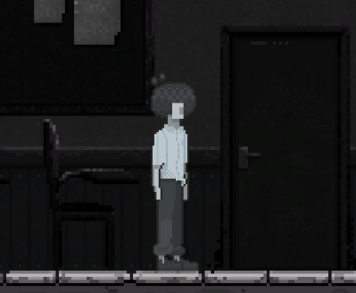
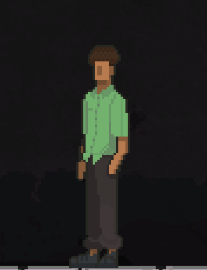
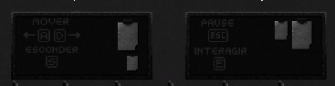

1968
História do Jogo:
Esse jogo é o meu trabalho de conclusão de curso, com temática educacional, o jogador aprende um pouco mais sobre a ditadura no Brasil e principalmente a influência dela nas escolas. O jogo retrata uma escola no Rio de Janeiro que foi palco de um episódio mortal de repressão, assim como essa, no jogo outras histórias reais e representativas são contadas.
Personagens do Jogo:
O presonagem principal é um estudante que não sabe a verdade sobre a ditadura, porém, ao explorar a escola ele passa a ter uma opinião contra ela.
O Bruno é o personagem que vai começar a mudar o protagonista, ele vai passar a missão para o protagonista no início do jogo.
Jogabilidade:
A jogabilidade dos minigames ainda usa as teclas WASD e E.